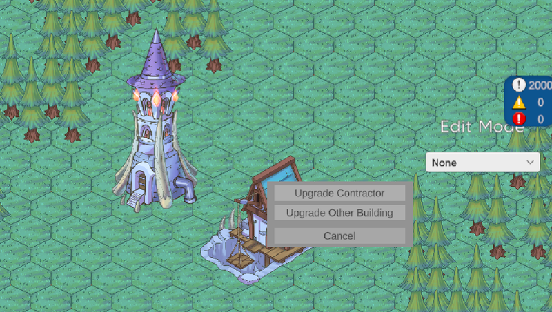
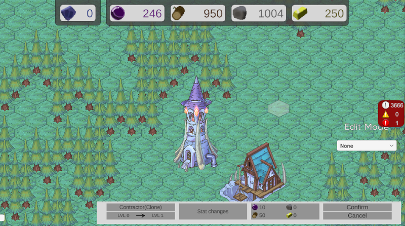

W25 Blog Post #3
Most of this meeting was spent as a typical work time. I did spend a moment talking with the programmer working on the save system to incorperate the total playtime into the saved data. Currently the plytime in the main tower UI is simply displaying the Time.time value. For the following weeks before the next meeting I'd be working on the Contarctor UI, with was very much aligned with the upgrade UI as well.
The contractor doesn't have a dedicated click-to-open UI that is needed for it, like many if the other buildings. The design that has been described for it uses a small tooltip to optionally either navigate to an upgrade menu of itself or and upgrade menu of another building within its range. Before working on that specific, a system for creating tooltips in general will be needed, as other buildings will require them in the future as well.
The current design for the tooltips is they show up after hovering over the building for a certain amount of time. Personally, I felt this might be something we will wnt to change to a right click option later, so I created an option to switch how they're opened.
For the Tooltips themselves I created an abstract ToolTip class which stores the logic for setting the tooltip at the mouse position, bounding it within the window, and closing when the mouse exits far enough.
In creating the new system for tooltips, it became exceedingly obvious that the UI system was very messy and difficult to work with. I rewrote a large portion of the code, introducing a way to track the main UI which was open, the building which the UI references, and a formalized means of switching from one UI to another.
To make it slightly easier to create UI windows which comply with this new system, I created a UIWindow class which all the exisiting UI windows were changed to inherit from. Previously changing something withing the UI system might require changing every single UI script, so this helps address that issue.
With all the backend UI systems out of the way, I created the tooltip design for the contractr. It was just a simple panel with 3 different buttons. Some of the buttons have yet to be implemented in full, but this will come in completing the upgrade UI in the coming week.
Image of Contractor ToolTip
The design of the Upgrade UI was much more complex than the contractor Tooltip in comparison. It was made more tedious by the fact I accidentally deleted my progress after creating the layout the first time. It isn't fully implemented to be able to upgrade buildings yet, but it can be supplied with a building and display the information for its next upgrade.
Current progress on Upgrade UI.